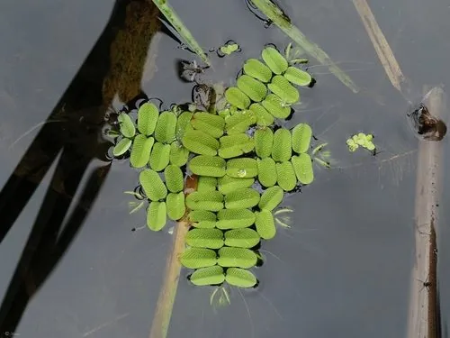

水生植物 · 植物界
槐叶萍 Salvinia natans

槐叶苹科漂浮水生蕨类，叶片两列浮于水面形似槐叶，表面有疏水绒毛，水珠不沾，可作饲料与绿肥，广布欧亚。
- 分类
- 门蕨类植物门纲水龙骨纲目槐叶苹目科槐叶苹科属槐叶苹属
- 栖息环境
- 池塘、水田、沟渠等静水水面，喜温暖、富营养水体
- 地理分布
- 广布欧亚温带与亚热带，中国各地淡水水域常见
- 保护级别
- 暂无评估
物种志
槐叶萍为槐叶苹科槐叶苹属漂浮水生蕨类植物，植株漂浮于水面，无根，茎细长横走。叶片三片轮生，其中两片浮于水面，绿色、椭圆形，表面有稀疏的疣状突起和疏水绒毛，第三片沉于水中，细裂成丝状，形似根。孢子果生于沉水叶上，夏秋成熟。
槐叶萍广布于欧亚大陆的温带和亚热带，中国各地池塘、水田和沟渠常见，喜温暖、阳光充足和富营养的静水，繁殖速度很快。它浮水叶表面的疏水绒毛能托住空气，使水珠无法附着，因此植株浮在水面不易下沉。槐叶萍可作鸭、鱼饲料和绿肥，也能吸收水中氮磷净化水质；在部分国家逸生后大量繁殖，被视为入侵水生植物，需要控制其蔓延。
形态与习性
- 株高植株漂浮，浮水叶长 1–2 厘米
- 孢子期夏秋，孢子果生于沉水叶上
- 光照喜充足阳光
- 水分漂浮于静水或缓流水面
- 土壤不依赖土壤，直接吸收水中养分
- 繁殖断枝繁殖，速度快
- 主要用途饲料、绿肥、水体净化
- 备注在部分地区为入侵水生植物
趣味知识
- 槐叶萍没有真正的根，沉水叶细裂如丝，替代根的作用。
- 浮水叶表面有疏水绒毛，水珠无法附着，植株因此不易下沉。
- 它属于蕨类植物，不开花，靠孢子繁殖。
- 在部分国家，槐叶萍逸生后大量繁殖，被视为入侵水生植物。